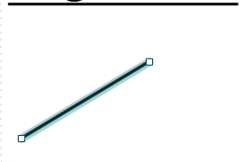
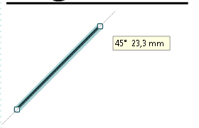
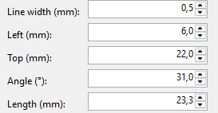
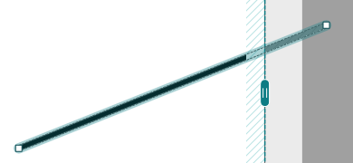
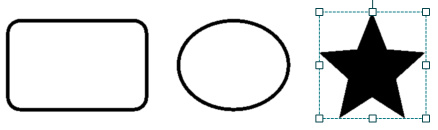
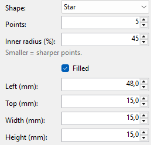

Lines and shapes
Lines divide the label, shapes frame something, mark it or become a black area.
-
Line
The Line tool or Insert > Line. On the right you set the Line width (mm).
A selected line has a light band along it and a handle at each end.

Drag one end to make the line longer or slant it. The angle and the length are shown next to the mouse. At 0°, 45°, 90°, 135° and so on it snaps once it is within 5°; a dotted guide shows it. Horizontal and vertical lines also snap to the label's edges and centre.

To set it exactly, use Angle (°) on the right, from 0° (level) through 90° (upright) to 180°, and Length (mm). When you type a value, the left end stays where it is (on an upright line, the lower end).

If a line reaches beyond the label, the part outside is marked light along the line; it isn't printed.

-
Shapes
The Shapes group in the tool palette or Insert: Rectangle, Ellipse, Triangle, Polygon and Star. On the right you set:

- Shape: another shape; size and position stay
- Corners (polygon) or Points (star): 3 to 20
- Inner radius (%) (star): 10 to 90; smaller = sharper points
- Round corners (mm) (rectangle): 0 = square corners
- Line width (mm): the line lies inside the shape's edge
- Filled: a black area instead of a line (then without a line width)
Hold Shift while dragging a corner handle and the shape becomes regular: a square, a circle, an equilateral triangle, an even polygon or an even star.

A shape turns to any angle, see Rotating and arranging. Boxes from older labels open as a rectangle or an ellipse.
-
Exact position and size
Every object has Left (mm), Top (mm), Width (mm) and Height (mm) on the right. Type sizes there to a tenth of a millimetre. A line has Angle (°) and Length (mm) instead of width and height.